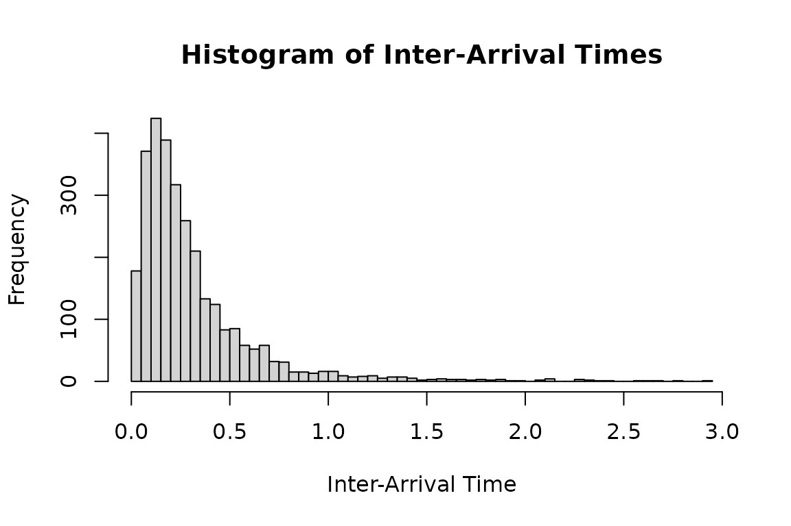
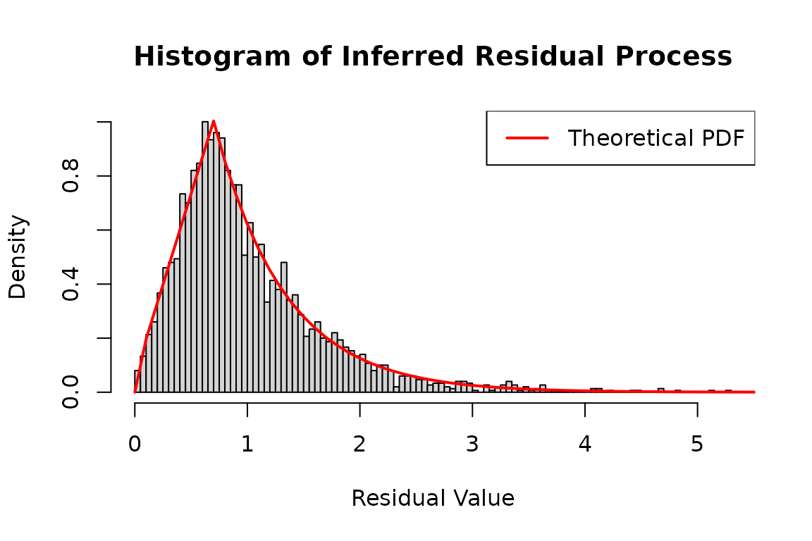
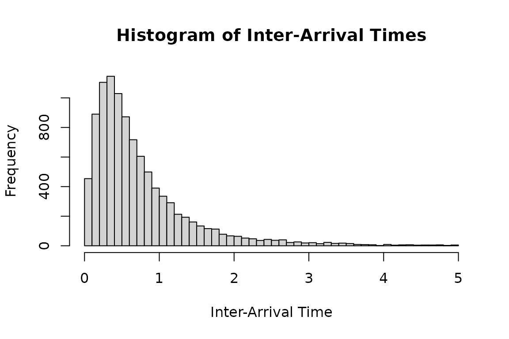
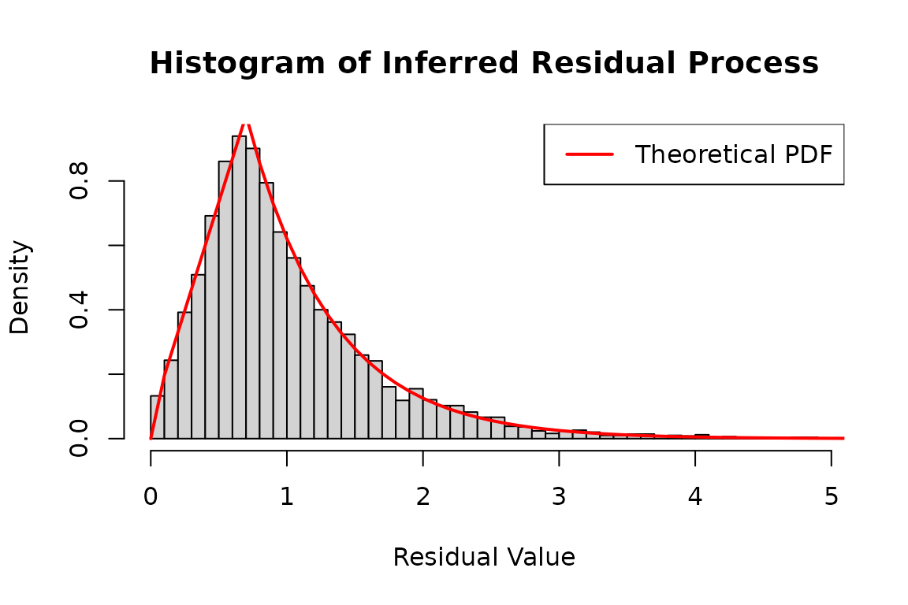

Legacy emhawkes FRPP examples
Source:vignettes/emhawkes-compatibility.Rmd
emhawkes-compatibility.RmdThese examples were copied from the flexible-residual section of the
emhawkes
Extended examples. They preserve the original hspec,
set_residual(), hsim() and hfit()
interface as a compatibility reference. This vignette is distributed
with frpp; its calculations deliberately use emhawkes. For the frpp
interface, use FRPP examples, with
fspec(), fsim() and ffit().
FRPP-specific development is moving to frpp. Existing emhawkes residual-law functions remain available for simple uses and compatibility during the transition. Hawkes goodness-of-fit residual diagnostics remain in emhawkes. No existing function is removed or deprecated by this documentation change.
The original kernel parameters and simulation sizes are retained. A starting seed is supplied here so the copied section runs independently of preceding Hawkes examples. The original two-dimensional seed is also retained. Automatic initialization currently selects zero components for these residual-law models.
A matched 10,000-row validation records the estimates, restoration, curvature diagnostics and elapsed times under explicitly matched optimizer controls.
The 10,000-row maximum-likelihood fit and its reconstruction are
opt-in. Set FRPP_RUN_LONG_EXAMPLES=true before building
this vignette to run them; they require the optional maxLik package. The
simulation, likelihood and residual plots run in the normal build.
One-dimensional model
The following example defines a point process with a custom residual
distribution. For details, see Self
and mutually exciting point process embedding flexible residuals and
intensity with discretely Markovian dynamics. The residual density
has a trapezoidal section and an exponential tail. The
dresidual, presidual, and
qresidual functions receive their distribution parameters
through the param vector. The ordinary Hawkes model is the
special case with an exponential residual distribution of rate 1. Use
set_residual to wrap the distribution functions with
log-density and tail-probability support.
mu1_d <- 0.5; alpha1_d <- 1; beta1_d <- 1.2; a <- 0.7; ell <- 1.6
hspec1_d <- set_residual(
new("hspec", mu = mu1_d, alpha = alpha1_d, beta = beta1_d),
param = c(a = a, ell = ell),
dresidual = dtzexp, presidual = ptzexp,
qresidual = qtzexp, rresidual = rtzexp
)
dh1_real <- hsim(hspec1_d, size = 3000)
#> Initial intensity components: auto -> zero (no supported unconditional mean formula for this model). Supplying lambda_component0 explicitly is recommended for this model.
hist(
dh1_real$inter_arrival[dh1_real$inter_arrival < 3],
breaks = 50,
main = "Histogram of Inter-Arrival Times",
xlab = "Inter-Arrival Time",
ylab = "Frequency"
)
Use logLik to evaluate the observed inter-arrival times
under hspec1_d. Setting infer = TRUE also
returns the intensity and residual processes in
infer_res_dh1.
# Infer the residual process using the log-likelihood method
# 'infer_res_dh1' contains the inferred process data based on the inter-arrival times
infer_res_dh1 <- logLik(hspec1_d, inter_arrival = dh1_real$inter_arrival, infer = TRUE)
# Plot a histogram of the inferred residual process
hist(
infer_res_dh1$res_process1,
breaks = 100,
probability = TRUE,
main = "Histogram of Inferred Residual Process",
xlab = "Residual Value",
ylab = "Density"
)
x <- seq(0, 8, 0.1)
lines(
x,
dtzexp(x, a = a, ell = ell),
col = 'red',
lwd = 2
)
# Add legend for clarity
legend("topright", legend = "Theoretical PDF", col = "red", lwd = 2)
Two-dimensional model
The same approach extends to multiple dimensions, using parameter matrices as in a multivariate Hawkes model.
mu2_d <- matrix(c(0.3), nrow = 2)
alpha2_d <- matrix(c(0.5, 0.8, 0.8, 0.5), nrow = 2, byrow = TRUE)
beta2_d <- matrix(c(1.5, 1.5, 1.5, 1.5), nrow = 2, byrow = TRUE)
a <- 0.7; ell <- 1.6
hspec2_du <- set_residual(
new("hspec", mu = mu2_d, alpha = alpha2_d, beta = beta2_d),
param = c(a = a, ell = ell),
dresidual = dtzexp, presidual = ptzexp,
qresidual = qtzexp, rresidual = rtzexp
)
print(hspec2_du)
#> An object of class "hspec" of 2-dimensional Hawkes process
#>
#> Slot mu:
#> [,1]
#> [1,] 0.3
#> [2,] 0.3
#>
#> Slot alpha:
#> [,1] [,2]
#> [1,] 0.5 0.8
#> [2,] 0.8 0.5
#>
#> Slot beta:
#> [,1] [,2]
#> [1,] 1.5 1.5
#> [2,] 1.5 1.5
#>
#> Slot rresidual:
#> function (size, param = c(a = 0.7, ell = 1.6))
#> {
#> do.call(rresidual, c(list(size), distribution_parameters(rresidual,
#> param)))
#> }
#> <environment: 0x56169f758ed8>
#>
#> Slot dresidual:
#> function (x, param = c(a = 0.7, ell = 1.6), log = FALSE)
#> {
#> residual_density(dresidual, x, log = log, params = distribution_parameters(dresidual,
#> param))
#> }
#> <environment: 0x56169f758ed8>
#>
#> Slot presidual:
#> function (q, param = c(a = 0.7, ell = 1.6), lower.tail = TRUE,
#> log.p = FALSE)
#> {
#> residual_cdf(presidual, q, lower.tail = lower.tail, log.p = log.p,
#> params = distribution_parameters(presidual, param))
#> }
#> <environment: 0x56169f758ed8>
#>
#> Slot qresidual:
#> function (p, param = c(a = 0.7, ell = 1.6), lower.tail = TRUE,
#> log.p = FALSE)
#> {
#> residual_quantile(qresidual, p, lower.tail = lower.tail,
#> log.p = log.p, params = distribution_parameters(qresidual,
#> param))
#> }
#> <environment: 0x56169f758ed8>The following histogram shows inter-arrival times from a model with
tzexp residuals.
set.seed(1107)
duh2_real <- hsim(hspec2_du, size = 10000)
#> Initial intensity components: auto -> zero (no supported unconditional mean formula for this model). Supplying lambda_component0 explicitly is recommended for this model.
# Plot a histogram of the inter-arrival times less than 5
hist(
duh2_real$inter_arrival[duh2_real$inter_arrival < 5],
breaks = 50,
main = "Histogram of Inter-Arrival Times",
xlab = "Inter-Arrival Time",
ylab = "Frequency"
)
Use logLik with infer = TRUE to recover the
intensity and residual processes.
infer_res_dh2 <- logLik(hspec2_du,
inter_arrival = duh2_real$inter_arrival,
type = duh2_real$type, infer = TRUE)Under a correctly specified model, the inferred residuals follow the specified residual distribution.
# Plot a histogram of the inferred residual process
hist(
infer_res_dh2$res_process2,
breaks = 50,
probability = TRUE,
main = "Histogram of Inferred Residual Process",
xlab = "Residual Value",
ylab = "Density"
)
# Generate a sequence of x values for plotting the theoretical distribution
x <- seq(0, 8, 0.1)
# Add a line to the histogram representing the theoretical density function
lines(
x,
dtzexp(x, a = a, ell = ell),
col = 'red',
lwd = 2
)
# Add legend for clarity
legend("topright", legend = "Theoretical PDF", col = "red", lwd = 2)
The transformed residuals in eres_process1 follow an
exponential distribution with rate 1 under a correctly specified
model.
hist(
infer_res_dh2$eres_process1,
breaks = 50,
probability = TRUE,
main = "Histogram of Inferred eResidual Process",
xlab = "Residual Value",
ylab = "Density"
)
# Generate a sequence of x values for plotting the theoretical distribution
x <- seq(0, 8, 0.1)
# Add a line to the histogram representing the theoretical density function
lines(
x,
dexp(x),
col = 'red',
lwd = 2
)
# Add legend for clarity
legend("topright", legend = "Theoretical PDF", col = "red", lwd = 2)
Use hfit for maximum likelihood estimation. The
distribution requires 0 < a <= 3,
ell > 0, and a nonnegative density. The last condition
is nonlinear, so the custom objective below checks each candidate with
dtzexp and returns -Inf when the distribution
is invalid.
residual_loglik <- function(object, inter_arrival, type, param) {
valid <- tryCatch({
dtzexp(1, a = param["a"], ell = param["ell"])
TRUE
}, error = function(e) FALSE)
if (!valid) return(-Inf)
suppressMessages(logLik(object, inter_arrival = inter_arrival, type = type))
}
constraints <- list(
ineqA = rbind(diag(6), c(0, 0, 0, 0, -1, 0)),
ineqB = c(rep(0, 6), 3)
)
mle_dh <- hfit(hspec2_du,
inter_arrival = duh2_real$inter_arrival,
type = duh2_real$type,
mylogLik = residual_loglik,
constraints = constraints)
summary(mle_dh)Hawkes curvature stabilization does not change this custom FRPP
objective. The moving transition point of tzexp can make
numerical Hessians step dependent. A successful optimizer return code
does not validate the reported Wald standard errors. See the fit
diagnostic report for the one-sided derivative and profile
checks.
These constraints keep the six parameters nonnegative and enforce
a <= 3, the upper limit of the trapezoid-exponential
distribution. The parameter order is mu1,
alpha1.1, alpha1.2, beta1.1,
a, and ell.
Reconstruction also updates the residual density, distribution,
quantile, and generator functions with the shared estimates of
a and ell. The custom objective and
optimization constraints remain part of the fitting step;
logLik() evaluates the restored model’s
residual-distribution likelihood.
estimated_dh <- fitted_hspec(mle_dh)
initial_dh <- fit_initial_state(mle_dh)
formals(estimated_dh@rresidual)$param
inferred_dh <- do.call(logLik, c(list(object = estimated_dh,
inter_arrival = duh2_real$inter_arrival, type = duh2_real$type, infer = TRUE), initial_dh))
c(fitted = as.numeric(logLik(mle_dh)), restored = inferred_dh$loglikelihood)Uniform residuals
The following example uses a uniform residual distribution on .
#set.seed(117)
mu2_d <- matrix(c(0.5), nrow = 2)
alpha2_d <- matrix(c(0.3, 0.3, 0.3, 0.3), nrow = 2, byrow = TRUE)
beta2_d <- matrix(c(1.2, 1.2, 1.2, 1.2), nrow = 2, byrow = TRUE)
hspec2_du <- new("hspec", mu=mu2_d, alpha=alpha2_d, beta=beta2_d,
rresidual = function(size) runif(n=size, 0, 2),
dresidual = function(x, param = numeric(0), log = FALSE)
dunif(x, 0, 2, log = log),
presidual = function(q, param = numeric(0), lower.tail = TRUE, log.p = FALSE)
punif(q, 0, 2, lower.tail = lower.tail, log.p = log.p),
qresidual = function(p, param = numeric(0), lower.tail = TRUE, log.p = FALSE)
qunif(p, 0, 2, lower.tail = lower.tail, log.p = log.p))
duh2_real <- hsim(hspec2_du, size = 5000)Plot a histogram of the inferred residuals:
infer_res_duh2 <- logLik(hspec2_du,
inter_arrival = duh2_real$inter_arrival,
type = duh2_real$type, infer = TRUE)
hist(
infer_res_duh2$res_process1,
breaks = 50,
probability = TRUE,
main = "Histogram of Inferred Residual Process",
xlab = "Residual Value",
ylab = "Density"
)